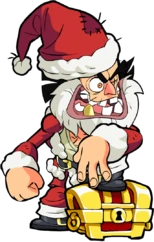
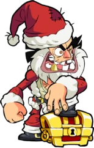
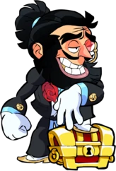
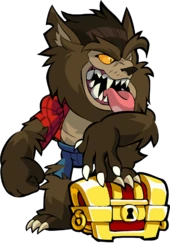
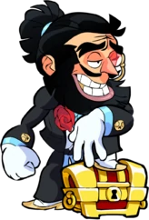
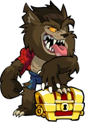

O Louco de Barbados
"Quantos piratas são necessários para incendiar um arquipélago? ~Thatch."


Thatch ganhou seu navio do diabo com a própria moeda de duas cabeças do diabo, e a bordo dele ele causou mais estragos do que qualquer pirata antes ou depois. Seu amor pela pólvora negra e sua obsessão em incendiar o mundo combinaram-se para afundar centenas de navios, saquear dezenas de portos e provocar a erupção prematura de pelo menos dois vulcões. O navio de Thatch tinha tantos fantasmas que eles assombravam em turnos. Ele joga seu jogo de bebida favorito, "Beba toda vez que Thatch tiver barba". Ele afirma ser casado com o mar e tem certidão de casamento para provar isso. Ele tem um rosto que só uma mãe poderia amar se ele não a tivesse feito andar na prancha. Para Thatch, o Torneio é um paraíso de caos e fogo, mas nem isso mata sua sede de caos. Ele ajuda nos esquemas de Vraxx para conquistar Valhalla por pura obstinação e, quando entediado, arma armadilhas mortais que ele chama de 'pegadinhas' para seus companheiros Lendas. Ele foge à noite para cavar buracos, sabendo que os deuses devem ter enterrado um tesouro em algum lugar.
 



 


